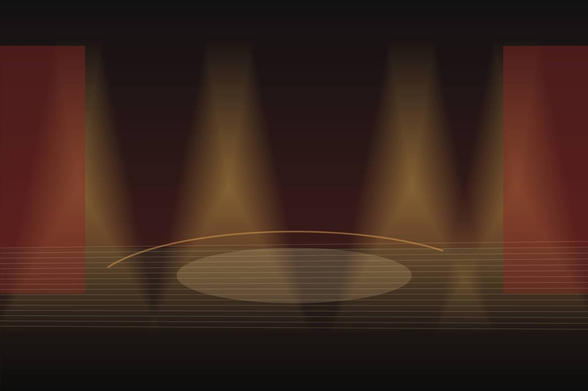
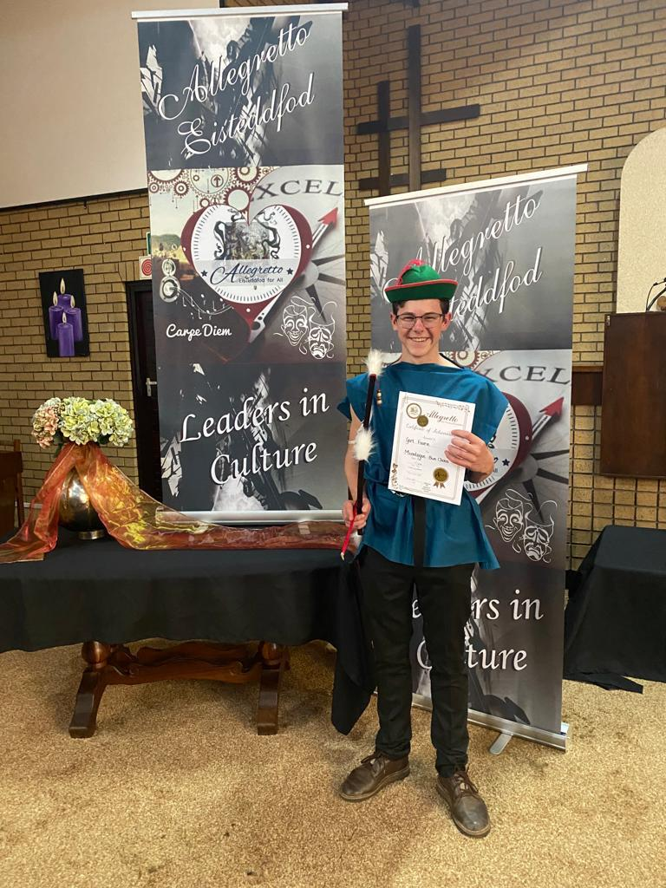
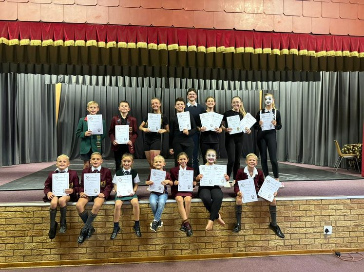

Private coaching
One-to-one over Teams. Eisteddfod pieces, monologues, auditions and prepared readings, worked to competition standard. R420 an hour.

Adjudicator · Allegretto Inter-Provincial Eisteddfod
Most drama teachers train students to perform. I adjudicate for the Allegretto Inter-Provincial Eisteddfod across South Africa, so I train them for what earns the marks — piece selection, interpretation, timing, projection and presentation, taught from the adjudicator's side of the table.
All coaching is live online over Microsoft Teams, so it does not matter whether you are in Pretoria, Polokwane or Plettenberg Bay.


Meet your coach
I'm Gert Fourie. I was eight years old the first time I stood on an eisteddfod stage, knees knocking, in a school hall somewhere in Pretoria — and I have not really left that world since. These days I sit on the other side of the table, adjudicating nationally for the Allegretto Inter-Provincial Eisteddfod.
Drama is not just acting — it is presence, voice, and the nerve to hold a room for ninety seconds without flinching.
Sessions are practical, disciplined and performance-led.
Read my adjudication & disclosure policyWhat I do
One-to-one over Teams. Eisteddfod pieces, monologues, auditions and prepared readings, worked to competition standard. R420 an hour.
Four to six learners, weekly, age-banded. Confidence, voice, expression and scene work. R590 a month.
Original speeches for ATKV Redenaars, English leagues and group public speaking, written to the set theme. From R950.
Case construction, rebuttal and points of information, for a team or an individual. R420 an hour.
The obvious question
For competition preparation, yes — and in some respects better. An eisteddfod adjudicator sits still, at a fixed distance, and watches a framed performance. That is very close to what a camera does.
What online does not replace is a full stage rehearsal with blocking and movement across a large space. I say so plainly on the enquiry call rather than after you have paid.
See exactly how a session runsHow it starts
Free download
The same checklist I work through with private students. Sent straight to your inbox, free.
Guides
Bookings